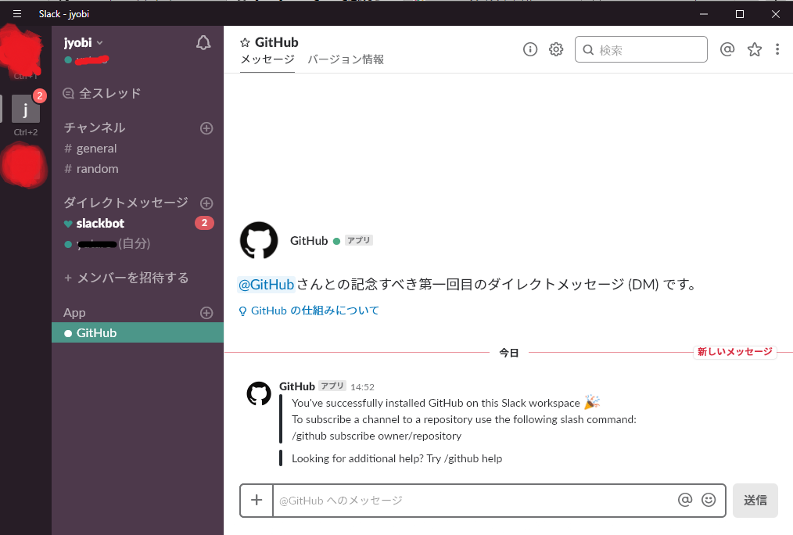

GitHub は、ソフトウェア開発者のチームが共同でコードを記述し、 プロジェクトを管理するためのツールです。 GitHub を Slack に連携させれば、 選択した Slack チャンネルであらゆるイベントの通知を受信できるようになります。 一番よく使う重要度の高い2つのツールを連携させて、 業務の状況を Slack 内から完全に把握できるようにしよう。
Slack 用 GitHub アプリ : GitHub の Developer、 Team または Business プランを利用していますか？そんな方にはこのアプリがおすすめです！
Github Notifications (レガシー): このアプリは GitHub Enterprise と互換性があります。
GitHub アプリを使えば、パブリックリポジトリのリンクのプレビューを Slack で受信し、 スラッシュコマンドで通知を設定し、 プロジェクトのアクティビティを簡単に把握することができます。
1.slack.github.com にアクセスし、「Add to Slack」をクリックします。
2.アプリが必要とするアクセス権限を確認し、「続行」をクリックして許可します。
3.アプリがアクセスできるチャンネルを選択します (全てのパブリックチャンネル、特定のチャンネル、チャンネルなし、等)。
アプリのインストールが完了すると、GitHub アプリから設定方法と 「/github」のスラッシュコマンドの使い方に関するダイレクトメッセージが送信されます。
Installされるとアプリを開くダイアログが表示されます
Slack.appを開くとこんな画面で出迎えてくれます
設定を変えるには以下から行います。 https://<チーム名>.slack.com/apps/manage 設定するアプリを探す https://<チーム名>.slack.com/apps/manageを知らなくてもアプリからも開けます。 slackアプリのメニューからCustomize Slackを開きます
Configure Appsを開きます。
InstallしたGitHubがあるので選択します。
Settingsを選択します。
Install時の設定でAll public channelsを選択してしまったとしてもこの画面で変更できます。 本来は極力権限はしぼるべきだと思います。